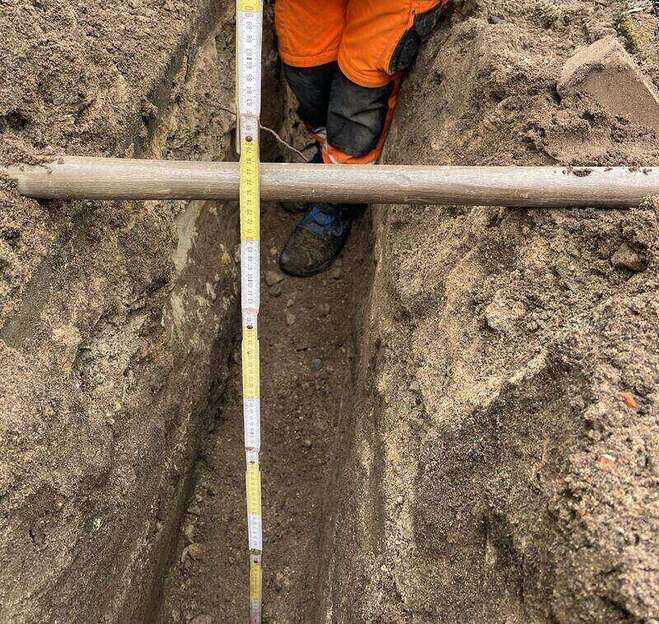
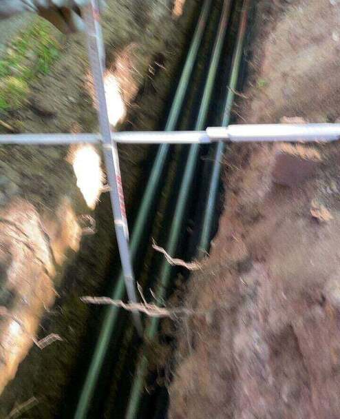

Der Anspruch steigt
Was vor fünf Jahren als Nachweis durchging, reicht heute nicht mehr. Netzbetreiber wollen Lage, Tiefe und Zeitpunkt — nicht ein Album voller Handyfotos.

Auf der Baustelle wird fotografiert, bestätigt und gemessen. Im Büro kommt das Ergebnis an — zugeordnet, mit Uhrzeit, ohne Sammelordner und ohne Rückfrage.
Fotos liegen auf dem privaten Handy. Das Aufmaß entsteht abends aus dem Gedächtnis. Und bei der Abrechnung fehlt genau der eine Abschnitt, nach dem der Auftraggeber fragt.
Ohne Produktvideo, ohne Verkaufstext — sechs Sätze, die erklären, worum es geht.

Was vor fünf Jahren als Nachweis durchging, reicht heute nicht mehr. Netzbetreiber wollen Lage, Tiefe und Zeitpunkt — nicht ein Album voller Handyfotos.

Aufnahme, Verortung und Bestätigung entstehen in einem Arbeitsschritt am Graben. Nicht drei Werkzeuge, nicht drei Wege.

Bedienbar mit Handschuhen, bei Sonne, im Regen, mit einer Hand. Wer dafür eine Schulung braucht, benutzt es nicht.

Die Anwendung meldet noch vor Ort, wenn ein Abschnitt unvollständig erfasst ist. Korrigiert wird im Graben, nicht drei Wochen später im Büro.

Trassenverlauf, Baufortschritt und Details werden zu einem belastbaren Datensatz — eindeutig verortet, sauber zugeordnet.

Im Büro liegt derselbe Stand wie im Graben. Auswerten, prüfen, freigeben, exportieren — ohne dass jemand Dateien hin- und herschickt.
Nicht die Menge der Fotos entscheidet, sondern ob jedes Bild einem Abschnitt und einem Datum zugeordnet ist.
Sie bekommen die Nachweise strukturiert — nicht 400 Dateien mit Kameranamen.
Der Stand eines Abschnitts ist abrufbar, ohne dass jemand auf der Baustelle ans Telefon geht.
Das Aufmaß entsteht im Feld. Abweichungen fallen am selben Tag auf, nicht bei der Schlussrechnung.
Übergabe als PDF oder in dem Format, das Ihr Abrechnungsprozess vorgibt.
KERNX LIVE ist unser Werkzeug. Sie erhalten das Ergebnis, nicht noch ein System zum Lernen.
Wir schreiben hier auf, woran wir arbeiten, und kennzeichnen es als das, was es ist: ein Entwicklungsziel, keine heute zugesagte Leistung.
Der offene Graben soll räumlich erfasst werden, statt nur fotografiert — Verlauf und Tiefe in einem Durchgang.
Jeder erfasste Punkt bekommt eine Koordinate. Damit lässt sich ein Abschnitt später eindeutig wiederfinden.
Flurstücke und Gebäude aus dem amtlichen Liegenschaftskataster einblendbar, damit der räumliche Bezug stimmt.
Abschnitte filtern, Tiefenverläufe darstellen, Messungen nachvollziehen und den Stand freigeben — im Büro, am großen Bildschirm.

KERNX LIVE befindet sich in der Entwicklung und wird zuerst in eigenen Projekten eingesetzt. Wir zeigen es hier, weil es erklärt, warum Dokumentation bei uns zum Leistungsumfang gehört und nicht zum Nachtrag.
Solange es nicht aktiv ist, führen wir die Dokumentation mit den bewährten Mitteln: Tagesbericht, Fotoprotokoll und Aufmaßblatt — am Tag der Ausführung.
Bei Aktivierung informiert werdenWir zeigen Ihnen an einem abgeschlossenen Abschnitt, wie unsere Übergabemappe aussieht — Fotoprotokoll, Tagesbericht und Aufmaß.